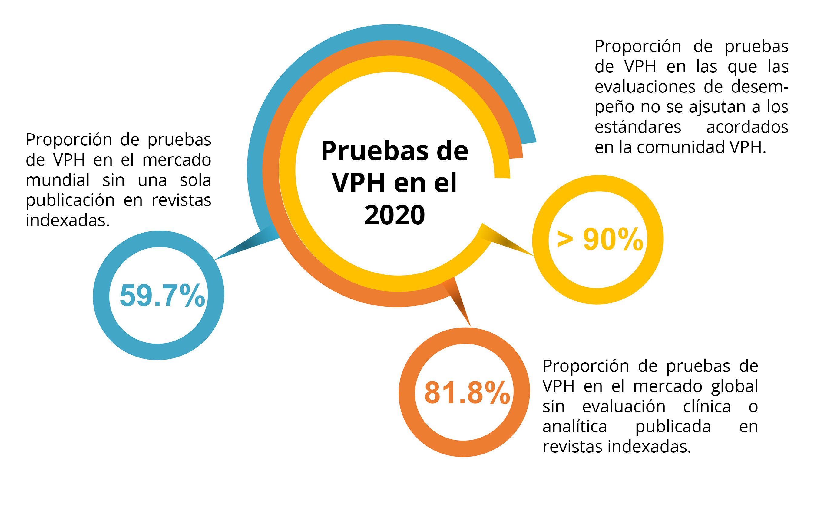

Cualquier prueba utilizada para la detección primaria dentro de un programa de detección debe ser de valor clínico, fácil de realizar, rápido, reproducible y asequible.
En el 2009, se desarrollaron directrices de consenso de expertos para la validación de las pruebas del VPH en relación con el cribado de mujeres mayores de 30 años [19]Meijer CJLM, Berkhof J, Castle PE, Hesselink AT, Franco EL, Ronco G, et al. Guidelines for human papillomavirus DNA test requirements for primary cervical cancer screening in women 30 years and older.. Las pautas (comúnmente conocidas como pautas de Meijer y posteriormente modificadas bajo el protocolo VALGENT [20]Arbyn M, Depuydt C, Benoy I, Bogers J, Cuschieri K, Schmitt M, et al. VALGENT: A protocol for clinical validation of human papillomavirus assays.) establecen que las pruebas de VPH deben:
Tener una sensibilidad clínica a CIN2+ que no sea inferior al 90% de sensibilidad clínica de la HC2.
Tener concordancia intra e interlaboratorio (es decir, concordancia entre las muestras procesadas dos veces en el mismo laboratorio o en diferentes laboratorios), con un intervalo de confianza inferior que no esté por debajo del 87%.
Valor predictivo negativo. Es necesario repetir las pruebas cada 3 años, es decir, alrededor de 14 visitas en un período de 40 años para las mujeres examinadas entre los 25 y 65 años.
Según la revisión de Poljak de 254 pruebas de VPH disponibles comercialmente [21]Poljak M, Valenčak AO, Domjanič GG, Xu L, Arbyn M. Commercially available molecular tests for human papillomaviruses: a global overview., en 2020 solo se habían validado 13 pruebas de VPH utilizando las pautas de Meijer, se habían evaluado 22 pruebas siguiendo el protocolo VALGENT para el genotipado del VPH y tres habían sido precalificadas por la Organización Mundial de la Salud (OMS) (careHPV, Xpert y Abbot Real Time). Esto significa que menos del 10% de las pruebas disponibles comercialmente estaban en línea con los estándares acordados dentro de la comunidad del VPH, y el 82% no tenía datos de desempeño analítico o clínico respaldado por revistas revisadas por homólogos clínicos.
